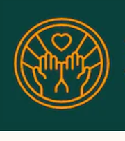
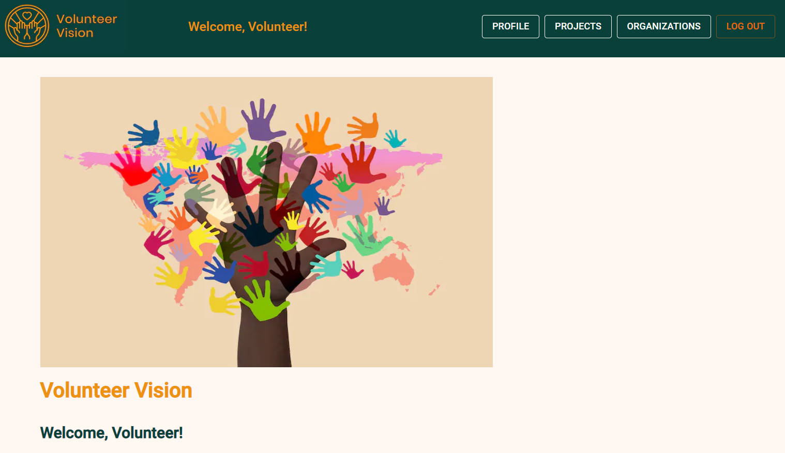

quiz application
Volunteer Vision was created to inspire individuals to make a positive impact on their community through volunteerism. We believe that every person has the potential to make a difference. By connecting volunteers with local non-profit organizations we can make the process of volunteerism more efficient and effective. This is a project that has the potential to greatly help the local residents and community.
Through our user-friendly interface, volunteers can easily create profiles, search for volunteer opportunities and express their interest in specific roles. Organizations can also create profiles, publish volunteering events/projects, and wait for volunteers to apply for them. Our tracking feature allows both volunteers and non-profit organizations to monitor the impact of their volunteer efforts, making it easy for both parties to see the positive change they are making.
 Take me to the project!This project was formed as a part of a hackathon with the team members being randomly selected. To create this project, we used a combination of Next.js/React, JavaScript, HTML, and CSS, Supabase, Twilio, and Auth0.
Next.js/React, along with JavaScript, HTML, and CSS, built the web application. In addition to CSS, we also MaterialUI as our styling library. Next.js allowed seamless integration with Auth0 using the API routes included in the framework. We also integrated Twilio passwordless SMS, allowing using to quickly login without having to worry about password security. Finally, the Supabase database allows for persistent data for the volunteers, organizations, and projects. The database lets organizations post new volunteer events, and then volunteers can view these projects and apply.